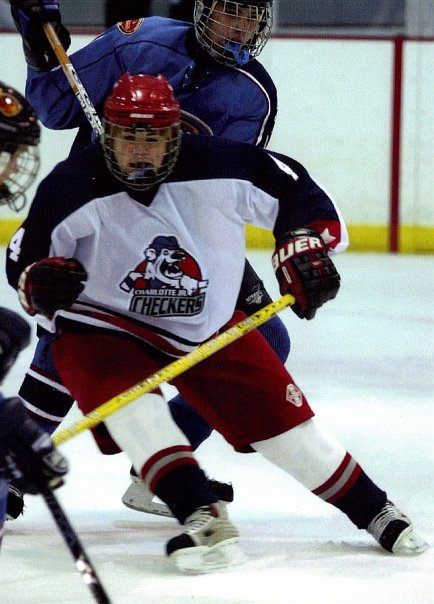

The Hockey Life
Back

And another short synposis..maybe
At age 4 is when I put on my first pair of ice skates. I caught on quickly and was skating around everyone, in just my first day, I was a natural!
The next 2 summers before I moved to Columbia, my Mom signed me up for the Stingrays Summer Roller Hockey Camp. There is where I learned to skate with a stick and puck, not exactly the ice, where I wanted to be. But it had to do.
So then! I moved to Columbia! There was no ice rink up there either :(. So I joined the youth roller hockey program, and became better at the sport. This is where I also first met my long childhood friend Adam.
FINALLY! Someone wanted to build an ice rink in Columbia, all of my roller hockey friends were dying to start playing on ice. I was around 10 years old by then. And when the ice rink finally opened, I spent all of my waking days in the rink. Whether it be public skate, pickup hockey, or just plain hanging out. We were all there.
My hockey life spans of about 20 years, too much to tell about it. But I became pretty decent at it and played travel Ice Hockey and for my High School team. Here's just some of the travel teams I've played on, and their respective age groups and tier.
Columbia Cyclones - PeeWee A
Columbia Jr. Inferno - Bantam AA
Charlotte Jr. Checkers - Midget AAA
University of South Carolina
"I couldnt play with them since I wasn't a student at the University, but I was friends with the coach and he let me practice with them"